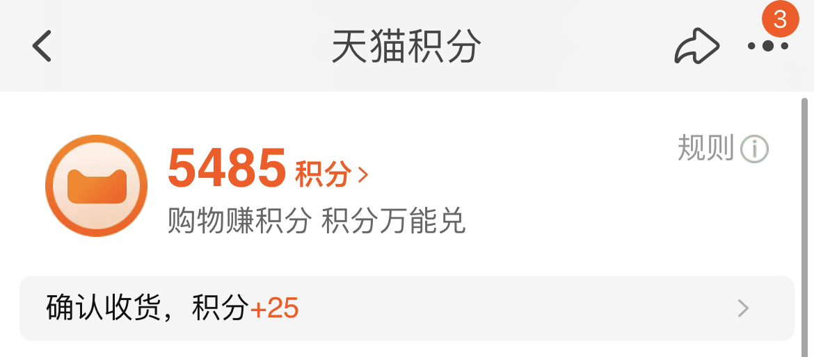

前言
最近一直在做和积分相关的业务系统，趁着这段时间有空就把最近对于积分的一些思考总结下来做个分享，仅供参考。
下面是本文的大纲
- 什么是积分
- 为什么要做积分
- 积分的入口和出口
- 积分的货币属性
- 积分的关键数
如果有相关错误和意见，欢迎指出
什么是积分？
在用户运营中，拉新、促活、转化等是绝对不会缺席的话题，要实现这些目标有很多的方式，而积分正式其中之一。
在我们现在的生活中，积分可以说是随处可见了，比如
- 移动运营商积分
- 电商购物平台积分

还有诸如信用卡积分、酒店积分等等，数不胜数。
积分本质上就是平台发放的一种虚拟货币，平台可以基于积分设计很多价值交换的功能，比如
- 积分兑换实物
- 积分兑换虚拟物品
- 积分抵扣现金支付
- ……
从平台自身的角度来看，积分其实是一种让利行为，即平台将自己的利润划一部分出来以积分的形式反馈给客户。
当把积分给到用户时，平台就产生了一笔债务，当用户消耗一笔积分以后，平台就偿还了一笔债务。
为什么要做积分？
据统计数据显示：商家发展一名新用户的成本是挽留老用户的 3 ~ 10 倍，向新顾客推销产品的成功率只有 15%，而向现有忠诚顾客推销产品的成功率则高达 50%。
而积分体系可以很好的连接用户与产品，维持用户，建立长期的需求，从而将新用户培养成高价值用户
一般这种用户关系的维护都称之为客户忠诚度计划，积分只是其中的体系之一
从哪里来？到哪里去？
哲学上有三个终极问题：我是谁？我从哪里来？要到哪里去？
换到本文谈到的积分里就是：积分是什么？积分从哪里来？积分到哪里去？
是什么前面已经谈过了，本节着重讨论一下后面两个问题

积分从哪里来？也可以理解为获取积分的入口，一般常见的有
- 消费返积分
- 参加活动返积分
- 签到
- 分享
- ……
到哪里去实际上就是指如何消耗掉积分，也就是常说的积分出口。
如果只有入口，没有出口的话，那用户就感受不到积分的价值，我们想通过积分体系与用户建立长期关系的目标也就落空了。
常见的出口有
- 积分兑换（实物 or 虚拟商品）
- 积分抵现 / 提现
- 积分过期自动作废
- ……
这样用户、入口、出口就形成了积分体系的价值闭环

这里深入讨论一个细节点：为什么积分需要有有效期并作废？
前面提到过积分对于平台来说其实是成本，也可以认为是一种债务，如果债务一直累积得不到释放会引起多种连锁反应，比如
- 信用贬值：用户信任感缺失，丧失获取积分的动力
- 积分贬值：平台为了加速积分的消耗，同一商品的积分定价会越来越高
- 挤兑风暴：每次平台上新，都会发生挤兑，因为人均持有积分数累积太多
而过期是一种可以低成本的消耗累积积分的一种方式

而且积分的过期会给用户带来一种缺失感，从而促进用户对积分价值的认知，达成基于积分与用户建立长期关系的目标。
积分的货币属性
前面有说到积分是一种让利行为：平台将自己的一部利润划分出来以积分的形式返给用户。
这就说明积分天然就有一定的货币属性，只不过它的价值被局限在了平台内部（目前也有一种联合积分的模式，它的积分可以跨平台使用）。
在积分建立之初就应该定义好汇率
汇率：指的是两种货币之间兑换的比率
有了汇率这样的概念后，就能够基于此去核算成本，更好的计算 ROI （投入产出比）了。
积分关键数据
数据可以直观的为我们展示当下整个积分生态的健康指数，下面简单列了一些（基本的 PV、UV 就列了）
一、积分维度
在积分的维度，一般会关注已发放积分总数、已消耗积分总数、消耗积分占比等数据。
二、用户维度
如果从用户的角度出发的话，关注的数据主要有人均持有积分数、人均消耗积分数、积分消耗人数比，近 30 天有积分消耗人数等。
如果想要做更好的积分运营，对持有积分的不同范围的人群分布也需要知悉

要是能和其他数据联动起来，统计到是由积分带来的转化数据就更好了，比如通过积分的拉新活动带来的新用户数。